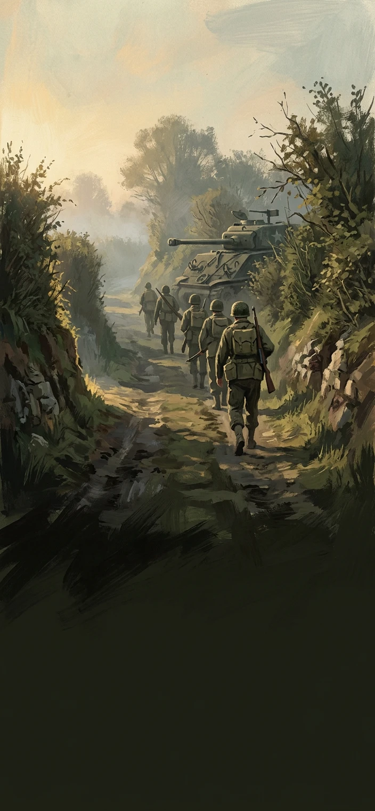
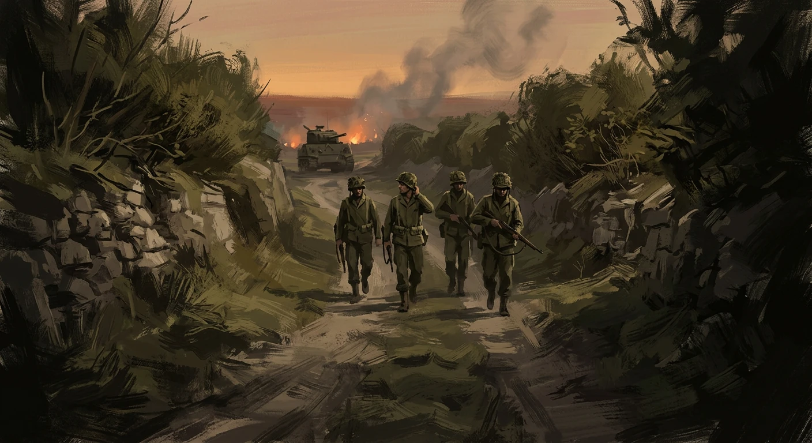
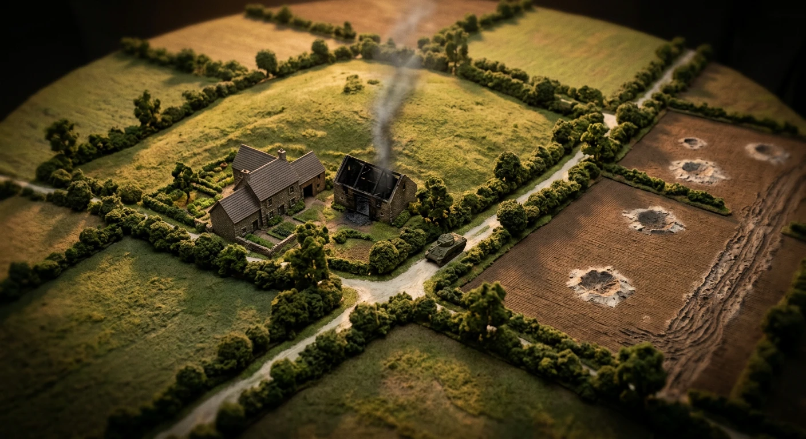
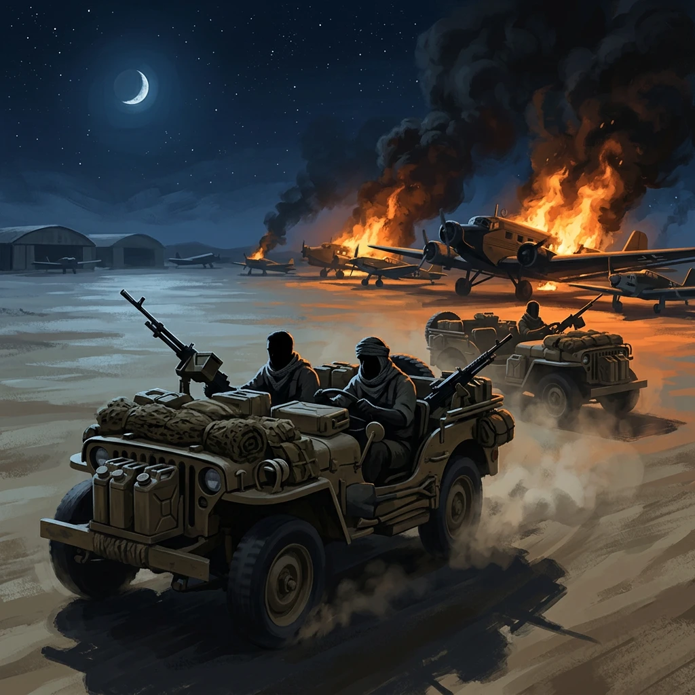

Long Bloody Road
WW2 tactics for iPhone and iPad. Real battles. Named men. Bring them home.
The first two missions are free.

The game
Every man has a name
You lead a handful of men through the war, one campaign at a time. The men you bring through one mission are the men you take into the next. Lose one, and he stays lost.
No loot. No timers. No upgrades to buy. Your men get better one way: by surviving.
Out now
Normandy, 1944
The beaches are behind you. Ahead is the bocage: sunken lanes, high hedgerows, and a German gun behind every one.

-
June 1944 · Free
Hedgerows near Carentan
Take the farm and the crossroads. Then hold them.
-
13 June 1944 · Free
Bloody Gulch
The counter-attack comes for Carentan. You are in its way.
-
11 July 1944
Hill 192
Fight up through the hedges to the crest, and stay there.
-
25 July 1944
Operation Cobra
The bombers go in first. Then the breakout, and the Panthers.
The enemy
A battle that fights back

A German commander plans every battle, and his plan changes from one to the next. Where the machine gun sits, when the counter-attack comes, whether there is armour: you find out the hard way.
Your intelligence is a best guess, and some of it is wrong. When it is over, the debrief shows you the plan you were up against.
Coming December 2026
Africa's Dust

North Africa, 1941. A handful of men drive out of the desert at night, destroy an airfield, and are gone by dawn. The first SAS raids, and you are in command. See the campaign.
Or follow @longbloodyroad on Instagram.
After that
The road goes on
Commando raids on the French coast. Pegasus Bridge. Holland. Bastogne. See what's planned.